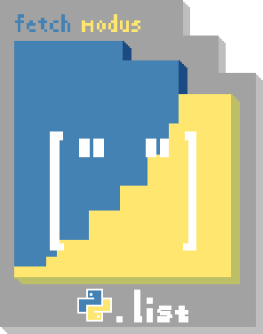

> Gabe: Abrir Sylladex e procurar por fontes de luz.

Você abre sua SYLLADEX, configurada com o FETCH MODUS em modo PY.LIST. Você recebeu sua Sylladex há algum tempo como um presente dos seus pais, provavelmente após ter concluído um curso de Python.
Você já tem bastante experiência com sua Sylladex, embora ainda ache inconveniente que, para guardar um item, seja necessário escrever o código de inserção de listas em programação com o item em questão. Isso pode ser um pouco imprático e, às vezes, você acaba sobrescrevendo itens e perdendo os anteriores no processo. Mas, veja pelo lado positivo: um inventário sem limites!
Só não se esqueça de lembrar em quais espaços da lista há itens guardados.